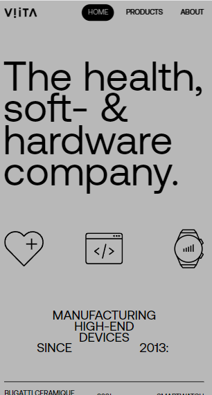
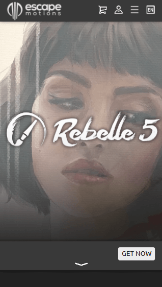
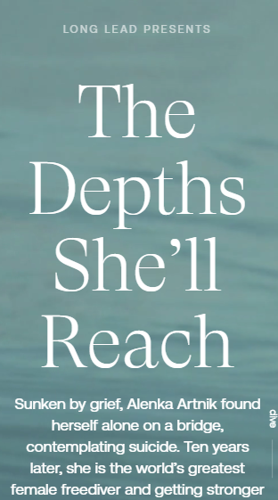

White Space
Viita Watches
Viita Watches Web Page I used this website for white space. All of the elements are spaced nicely, and the website isn't too crowded.
Proximity
Rebelle
Rebelle Web Page I picked the Rebelle website for proximity, because there is a beautiful painting front and center. The painting was made using the software, and the name of the software is directly in front of it. This directs the user to relate beautiful paintings with the software.
Visual Hierarchy
Long Lead
Long Lead Web Page I chose Long Lead for visual hierarchy because of the way they used their headlines. The name of the company is small, and then they made the name of the article very large. Beneath that they made the summary a medium sized font, so that the title catches the user's eye, and then draws it downwards to read.